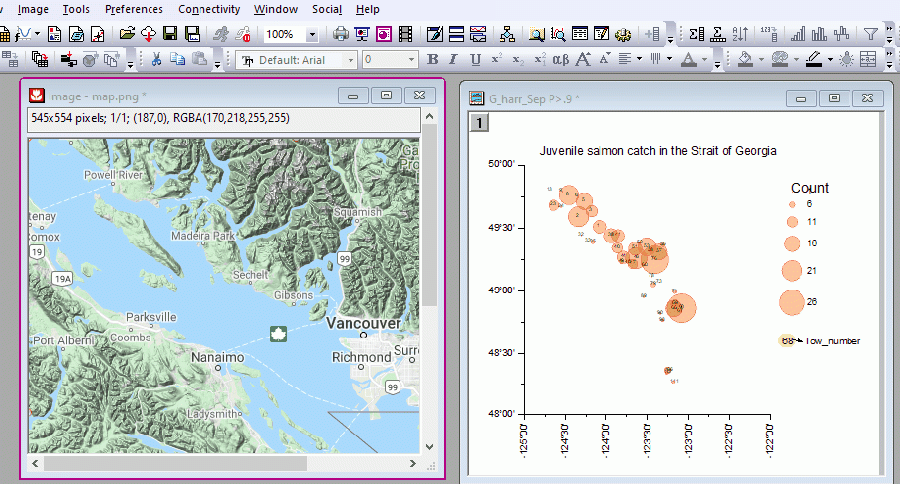

Bild in Diagramm einfügen
Insert-Image
Sie können ein Bild ins Diagrammfenster einfügen, unabhängig davon, ob das Bild sich im Bildfenster befindet oder außerhalb von Origin ist. Sie können ein Bild außerhalb von Origin kopieren und in das Diagrammfenster einfügen oder eine Diagrammseite als Bild innerhalb von Origin kopieren und es in ein anderes Diagrammfenster einfügen.
Bild einfügen
Bilddatei außerhalb von Origin einfügen
- Aktivieren Sie ein Diagrammfenster. Wählen Sie im Menü Einfügen: Bild aus Datei....
- Wählen Sie eine Bilddatei im Dateibrowser, um sie in den aktiven Diagrammlayer einzufügen. Es werden mehrere Bildtypen unterstützt, einschließlich png, svg, jpg, tif, bmp etc.
Dadurch wird das Bild standardmäßig als Bildobjekt eingefügt. Sie können es später in den Layerhintergrund umwandeln.
Wissenswertes zu eingefügten Bildern:
- Vor Origin 2021b wurden in das Diagrammfenster eingefügte Bilder (nicht als Layerhintergrund) als Typ = BMP eingefügt, wobei Interpolation per Standard aktiviert war. In Origin 2021b wurde das gleiche Bild als Typ = OIMAGE eingefügt. Dieser Typ unterstützte keine Interpolation und führte in seltenen Fällen zu einem Bild mit geringerer Qualität. Sollten Ihre eingefügten Bilder sich verschlechtern, können Sie die Einstellung @IMGB = 1 probieren, BEVOR Sie das Bild einfügen. Um die Interpolation zu prüfen, klicken Sie mit der rechten Maustaste auf das BMP-Bild, wählen Sie Eigenschaften, klicken Sie auf die Registerkarte Bild und überprüfen Sie, ob die Option Interpolation aktivieren aktiviert ist. Informationen zum Ändern des Werts einer Systemvariablen finden Sie in dieser FAQ. Gilt NICHT für Bilder, die als Hintergrund eingefügt wurden.
- Um die Projektdateigröße zu reduzieren, wenn eine Bilddatei größer ist als 800 kb ist (bestimmt von der Systemvariablen @IML), wird sie beim Einfügen in ein Diagramm automatisch auf Datei verknüpfen gesetzt. Sobald sie verknüpft ist, wird sie automatisch aktualisiert, wenn sich an der Quellbilddatei etwas ändert. Wenn Sie manuell eine kleinere Größe für das Bild festlegen möchten als das verknüpfte,
- klicken Sie mit der rechten Maustaste auf das eingefügte Bild und aktivieren Sie Datei verknüpfen.
- Klicken Sie doppelt auf das eingefügte Bild, um es in einem separaten Fenster zu öffnen, und klicken Sie dann mit der rechten Maustaste auf das Bild und aktivieren Sie Datei verknüpfen.
- Wenn ein Bildobjekt mit einer externen Datei verknüpft ist, können Sie immer mit der rechten Maustaste auf sie klicken und Quelldateipfad wählen, um die Quelle zu prüfen oder zu ändern.
Wenn Sie das Bild als Bildobjekt einfügen
-
- Sie können die Größe (Seitenverhältnis wird beibehalten) und die Position des Bilds durch Ziehen an der Maus ändern.
- Das Bildobjekt ist standardmäßig mit dem Layerrahmen verbunden.
- Klicken Sie doppelt auf das Bild, um es in einem Bildfenster zu öffnen. Sie können das Bild im Bildfenster weiter benutzerdefiniert anpassen, z. B. einen interessanten Bereich des Bilds ausschneiden bzw. abzuschneiden oder das Bild drehen. Wenn Sie fertig sind, klicken Sie auf
 , um zum Diagrammfenster zurückzukehren.
, um zum Diagrammfenster zurückzukehren.

 |
Ausschneiden vs. Abschneiden
- Ausschneiden bewahrt das ursprüngliche Bild nicht.
- Beschneiden bewahrt das ursprüngliche Bild, so dass Sie das ROI später verschieben und in der Größe verändern können, um das Bild erneut zu beschneiden. Das Diagrammfenster wird sich dementsprechend aktualisieren.
- Wenn Sie das ROI-Feld nach dem Beschneiden löschen, können Sie mit der rechten Maustaste in das Bildfenster klicken und Beschneiden entfernen, um die volle Größe des Bilds im Diagrammfenster wiederherzustellen.
Erfahren Sie mehr zum ROI auf dem Bild auf dieser Seite.
|
|
Erfahren Sie mehr zu dem, was Sie in dem separaten Bildfenster tun können, im Abschnitt unten.
|
SVG einfügen
Scalable Vector Graphics (SVG) ist ein weit verbreitetes Vektorformat. Seit seiner Einführung in Origin verbessern wir die Verwendung von SVGs kontinuierlich. Wenn Sie ein Bild in das Origin-Diagrammfenster einfügen wollen und es frei platzieren, strecken, drehen und in der Größe verändern wollen, ohne dass es an Qualität verliert, empfehlen wir nachdrücklich die Verwendung des SVG-Formats.
- Abgesehen vom allgemeinen Menü Einfügen: Bild aus Datei... können Sie ein SVG-Bild per Drag&Drop in ein Diagrammfenster ziehen, um es direkt einzufügen.
- Klicken Sie zweimal einzeln (kein Doppelklick!) auf das Bild, um den Drehmodus aufzurufen, bewegen Sie den Cursor zu einem der vier Ankerpunkte und ziehen Sie am Anker, wenn der Cursor sich in einen Kreis verwandelt, so dass sich das Bild frei dreht.
ODER
- Klicken Sie doppelt auf das Bild, um den Dialog Objekteigenschaften zu öffnen. Geben Sie auf der Registerkarte Dimensionen einen Winkelgrad ein oder wählen Sie ihn über die Option Winkel, um das Bild genau zu drehen.
Wenn Sie das Bild als Layerhintergrund einfügen möchten
- klicken Sie doppelt auf das Bildobjekt, um es in einem Bildfenster zu öffnen.
- Klicken Sie mit der rechten Maustaste in das Bildfenster und wählen Sie Als Layerhintergrund setzen.
-
- Das Hintergrundbild kann nicht per Mausklick ausgewählt werden. Sie können es aber folgendermaßen in einem separaten Bildfenster öffnen:
- Klicken Sie einmal auf den Rand des Diagrammlayers. Eine Minisymbolleiste wird angezeigt.
- Klicken Sie doppelt auf die Schaltfläche Bild öffnen , um das Hintergrundbild in einem Bildfenster zu öffnen.
-
ODER
- Die Objektverwaltung wird geöffnet, Klicken Sie mit der rechten Maustaste in die Objektverwaltung und wählen Sie Diagrammobjekte zeigen im Kontextmenü.
- Klicken Sie doppelt auf das Symbol des Layerhintergrunds, um das Hintergrundbild in einem Bildfenster zu öffnen.
Unwichtig, ob das Bild als Hintergrund oder Objekt eingefügt wurde
-
- Das eingefügte Bild ist in das Diagramm eingebettet.
- Sie können doppelt auf den Bildknoten in der Objektverwaltung klicken, um es in einem separaten Bildfenster zu öffnen.
- Klicken Sie mit der rechten Maustaste in das Bildfenster. Eine Menüliste wird angezeigt.
-
| ROI-Feld hinzufügen |
Fügen Sie ein ROI-Feld zum Bild hinzu. Erfahren Sie auf dieser Seite, was Sie mit dem ROI im Bild tun können. |
| Gesamte Bildskalierung auf Diagramm anwenden |
Nur verfügbar, wenn das Bild als Hintergrund eingefügt wurde. Skalieren Sie das Diagramm gemäß der Koordinaten, die im Bildfenster festgelegt sind, neu.

|
Tatsächliche Größe anzeigen/
An Fenster anpassen |
Zeigen Sie das Bild in 1:1 Pixel an oder passen Sie das Bild an die Fenstergröße an. |
| Verknüpfte Datei |
Sie können wählen, das Bild mit dem Projekt zu speichern oder nicht. Das Aktivieren dieses Elements verknüpft das eingefügte Bild mit der Quellbilddatei außerhalb von Origin. Das Bild wird beim Speichern des Projekts ausgeschlossen. Es wird nur die Verbindung zwischen der Quellbilddatei und dem Origin-Projekt beibehalten. Wenn Sie das Projekt das nächste Mal öffnen, wird das Bild automatisch neu geladen.
Diese Funktion soll beim Reduzieren der Projektgröße helfen, insbesondere wenn das eingefügte Bild sehr groß ist.
|
| Pfad der Quelldatei |
Aktivieren oder ändern Sie den Pfad der Quellbilddatei in dem geöffneten Dialog. Wenn das aktuelle Projekt gespeichert wurde, können Sie das Kontrollkästchen Relativ zum Projekt aktivieren, um den Pfad relativ zum Projekt zu speichern. |
| Bild aus Diagramm extrahieren |
Extrahieren Sie das eingebettete Bild in ein "reales" Bildfenster, das als Behälter dient. Das bedeutet, das Bild wird im Bildfenster gespeichert und daher mit dem Projekt gespeichert.
Diese Funktion integriert alles in dem Projekt und macht es einfacher, Ihre Arbeit mit anderen zu teilen.
|
 |
Unten sehen Sie, wie Sie ein Bild, das zuerst als Layerhintergrund eingefügt worden ist, in ein anderes Diagramm einfügen.
- Klicken Sie in dem Diagramm mit Bildhintergrund mit der rechten Maustaste in die Objektverwaltung und wählen Sie Diagrammobjekte zeigen.
- Klicken Sie doppelt auf den Eintrag des Layerhintergrunds, um ihn in einem Bildfenster zu öffnen.
- Klicken Sie mit der rechten Maustaste in das Bildfenster und wählen Sie Bild aus Diagramm extrahieren.
- Aktivieren Sie ein anderen Diagramm ohne Hintergrund und wählen Sie Einfügen: Bild aus Bildfenster, um es einzufügen.
|

Bild innerhalb von Origin einfügen
- Aktivieren Sie ein Diagrammfenster.
- Wählen Sie Einfügen: Bild aus Bildfenster.... Dadurch wird der folgende Dialog geöffnet.
| Layerhintergrund |
- Aktivieren Sie dieses Kontrollkästchen, um das Bild als Layerhintergrund einzufügen, das nicht ausgewählt oder manuell verschoben werden kann. In diesem Fall werden die Einfügeposition und -größe von den XY-koordinaten des Bilds bestimmt. Lesen Sie auf dieser Seiten nach, wie XY-Koordinaten eines Bildes festgelegt werden.
- Deaktivieren Sie dieses Kontrollkästchen, um das Bild als Diagrammobjekt einzufügen. Sie können die Größe und Position des Objekts mit Hilfe der Maus ändern.
|
| Layer mit Hilfe der Bildkoordinaten neu skalieren |
Nur verfügbar, wenn das Bild als Hintergrund eingefügt wurde. Aktivieren Sie dieses Kontrollkästchen, um die XY-Achsen des Diagramm gemäß den XY-Koordinaten des eingefügten Bildes neu zu skalieren. |
Vorteile, ein Bild aus einem Bildfenster einzufügen
-
- Das Einfügen des Bilds über Einfügen: Bild aus Datei vergrößert die Projektdatei beträchtlich. Um die Projektgröße zu reduzieren, empfehlen wir, die Bilddatei in Origins Bildfenster zu importieren und es dann in das Diagramm einzufügen.
- Das Bildfenster ermöglicht Ihnen, XY-Koordinaten des Bildes festzulegen und es dann an einer genauen Position in das Diagramm einzufügen oder das Diagramm gemäß der Bildkoordinaten neu zu skalieren.
Sehen Sie auf dieser Seite, wie die XY-Koordinaten eines Bildes festgelegt werden.
Unten ist ein Beispiel dazu, wie die XY-Koordinaten eines Bildes festgelegt werden und dieses als Hintergrund in das Diagramm eingefügt wird.
|
Angenommen, wir haben einen Screenshot von Google Map. Wir möchten ihn in das Blasendiagramm als Hintergrund einfügen.
- Importieren Sie die Datei mit dem Molekülbild in das Origin-Bildfenster über Datei: Neu: Bild: Bild/Videos....
- Wählen Sie bei aktivem Bildfenster Bild: Koordinaten festlegen..., um die XY-Koordinaten des Bildes festzulegen.
Hinweis: Die Einheit wird beim Einfügen des Bildes in das Diagramm nicht wirksam. Die eingefügte Position bestimmt nur die Werte der XY-Koordinaten. Die in diesem Dialog festgelegte Einheit wird verwendet, um die tatsächliche Skalierung des Bildes zu bestimmen, und wird im Bildfenster gespeichert.
- Wählen Sie bei aktivem Diagrammfenster Einfügen: Bild aus Bildfenster, um das Molekülbild gemäß der festgelegten Koordinaten ins Diagramm einzufügen. Stellen Sie sicher, dass das Kontrollkästchen Layerhintergrund aktiviert ist.
|

-
- Sie können das Diagramm gemäß der Bildkoordinaten automatisch neu skalieren: Aktivieren Sie die Option Hintergrundgbild automatisch neu skalieren
 auf der Minisymbolleiste (auf Layerebene). Sie ist nützlich in den Fällen, in denen das Bild ein aus einem ROI-Feld erstelltes verknüpftes Bild ist und Sie das ROI-Feld an eine andere Stelle verschieben möchten.
auf der Minisymbolleiste (auf Layerebene). Sie ist nützlich in den Fällen, in denen das Bild ein aus einem ROI-Feld erstelltes verknüpftes Bild ist und Sie das ROI-Feld an eine andere Stelle verschieben möchten.
- Wenn Sie das Bild als Hintergrund einfügen, nachdem Sie die XY-Koordinaten für das Bild festgelegt haben, können Sie außerdem ein ROI-Feld in das Bild einfügen, um den Diagrammhintergrund auf diesen Bereich zuzuschneiden und die Diagrammachsen entsprechend zu aktualisieren.
- Fügen Sie ein Bild als Hintergrund über Einfügen: Bild aus Bildfenster ein.
- Aktivieren Sie das Bildfenster. Fügen Sie ein ROI-Feld hinzu.
- Legen Sie die ROI-Koordinaten fest.
- Klicken Sie mit der rechten Maustaste auf ein ROI-Feld und wählen Sie Skalierung anwenden auf: Graph1.
- Mehr Optionen erhalten Sie über einen Rechtsklick in das Bildfenster.
| ROI-Feld hinzufügen |
Fügen Sie ein ROI-Feld zum Bild hinzu. Erfahren Sie auf dieser Seite, was Sie mit dem ROI im Bild tun können. |
| Gesamte Bildskalierung auf Diagramm anwenden |
Nur verfügbar, wenn das Bild als Hintergrund eingefügt wurde. Skalieren Sie das Diagramm gemäß der Koordinaten, die im Bildfenster festgelegt sind, neu.
|
Tatsächliche Größe anzeigen/
An Fenster anpassen |
Zeigen Sie das Bild in 1:1 Pixel an oder passen Sie das Bild an die Fenstergröße an. |
| Verknüpfte Datei |
Sie können wählen, das Bild mit dem Projekt zu speichern oder nicht. Das Aktivieren dieses Elements verknüpft das eingefügte Bild mit der Quellbilddatei außerhalb von Origin. Das Bild wird beim Speichern des Projekts ausgeschlossen. Es wird nur die Verbindung zwischen der Quellbilddatei und dem Origin-Projekt beibehalten. Beim nächsten Öffnen des Projekts sehen Sie einen nach unten weisenden Pfeil auf dem Diagramm. Klicken Sie auf ihn, um das Bild neu zu laden.
Diese Funktion soll beim Reduzieren der Projektgröße helfen, insbesondere wenn das eingefügte Bild sehr groß ist.
|
| Pfad der Quelldatei |
Aktivieren oder ändern Sie den Pfad der Quellbilddatei in dem geöffneten Dialog. Wenn das aktuelle Projekt gespeichert wurde, können Sie das Kontrollkästchen Relativ zum Projekt aktivieren, um den Pfad relativ zum Projekt zu speichern. |
| Bild in Diagramm einbetten |
Dies speichert das Bild als ein eingebettetes Objekt im Diagrammfenster.
|
Bild aus Web einfügen
- Wählen Sie Bild aus Web einfügen aus.
- Weitere Einzelheiten finden Sie hier.
Bild in Diagrammseite einfügen
- Kopieren Sie ein Bild in Origin
oder
kopieren Sie die Diagrammseite in Origin als ein Bild.
- Gehen zum Diagrammfenster und klicken Sie mit der rechten Maustaste auf die leere Fläche, um Einfügen: Einfügen auszuwählen, oder drücken Sie Strg + V oder wählen Sie im Hauptmenü Bearbeiten: Einfügen im Hauptmenü.
- Klicken Sie doppelt auf das eingefügte Bild. Das Bild wird im Bildfenster geöffnet. Informationen zum Bildfenster und zu seiner benutzerdefinierten Anpassung können Sie auf dieser Seite nachlesen.